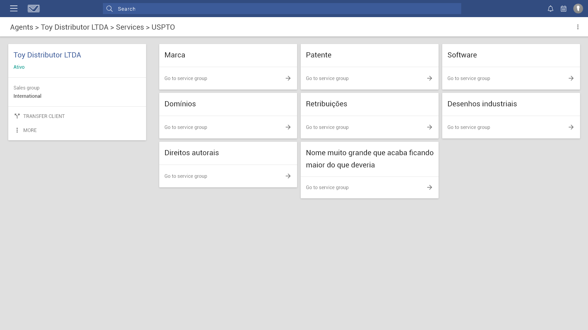

VILAGE Intelectual Property é uma empresa especializada em registros de marcas, patentes e outros serviços correlatos.
Tendo mais de 100 funcionários e mais de 25 escritórios pelo Brasil e pelo mundo, a VILAGE chegou ao ponto de necessitar refazer totalmente seu sistema interno.
Também houve a necessidade de aprimorar o site da VILAGE e, por fim, reconstruir o sistema acessível para clientes.
VILAGE's internal system

O sistema interno da VILAGE cuida desde a captação de clientes, o acompanhamento dos processos de registro de marcas, patentes e outros serviços correlatos, assim como também o pós-venda.
Além disso, ainda temos o controle de funcionários e o chat interno da empresa.

Para cada um dos agentes internacionais, clientes ou outras entidades que possuem contato com a VILAGE, temos uma área específica para acessar detalhes informativos, de contatos, endereços e contasa bancárias.
Claro que, se temos informações a serem exibidas, temos também a seção de cadastro das mesmas.

Assim como listagem de informações com buscas contextuais.

Possuindo também seções internas de acesso a outras diversas funções e áreas.

VILAGE's site

Reconstruindo a identidade da VILAGE perante seus clientes, tivemos o refazimento do site da empresa.
Para cada seção, precisávamos explicar os conceitos tanto para os clientes especialistas que necessitavam somente de um intermediário quanto para os clientes inexperientes que precisavam de um passo-a-passo desde o início.
Existem algumas variações nas maneiras de explicar os conceitos, algumas envolvendo infográficos além dos textos.
Além disso, todos incluem uma seção de Perguntas Frequentes.
Não poderiam faltar formulários de contato para os prospectos buscarem informações sobre os serviços da VILAGE.

Demonstrando o alcance da VILAGE, a tela de Escritórios mostra mais informações e meios de contato sobre cada um dos 30 escritórios da empresa.

Para aumentar a credibilidade, apesar dos 32 anos de empresa, decidimos fazer a página de Depoimentos de clientes.
Como uma forma de aumentar o alcance da empresa e sua representatividade perante a sociedade, temos uma seção de notícias.
São coletadas e curadas notícias de vários pontos correlatos à marcas e patentes.
Abaixo o exemplo de uma página de notícia.

Buscando também atender aos clientes e agentes internacionais, que procuram o site com interesses ligeiramente diferentes dos clientes nacionais, foi pensada em uma seção a parte.
Oferece algumas das mesmas informações, porém com foco e disposições variadas.

Assim como uma variação do estilo definido pelo site, assemelhando-se, mas com um diferencial suficiente para que os usuários percebam que estão em uma seção exclusiva.

infoVILAGE

Como uma maneira de dar aos clientes um acesso direto a todos os seus processos em diversos países, foi planejado o infoVILAGE.
Oferecendo uma maneira de que o cliente possa observar, acompanhar e tomar decisões sobre suas propriedades intelectuais.
Oferecendo buscas contextuais e alinhadas aos propósitos dos usuários.
Dashboards com informações concisas, diretas e relevantes em um primeiro momento.

Também precisava ser atendida a necessidade de fazer o upload e download de arquivos dentro do sistema.
Formulários contendo diversas maneiras de se inserir os dados, incluindo até a seleção de cores específicas para tags de busca.
Além disso, uma seção especial chamada "Danger Zone", onde ações sensíveis como exclusão de dados importantes ficam contidas a parte.
É muito importante para os clientes que possam ver o histórico das decisões judiciais sobre seus processos.
Relatórios simples e complexos para que o cliente tenha uma noção total do andamento de seus processos, ainda podendo imprimir caso deseje ter em versão física.